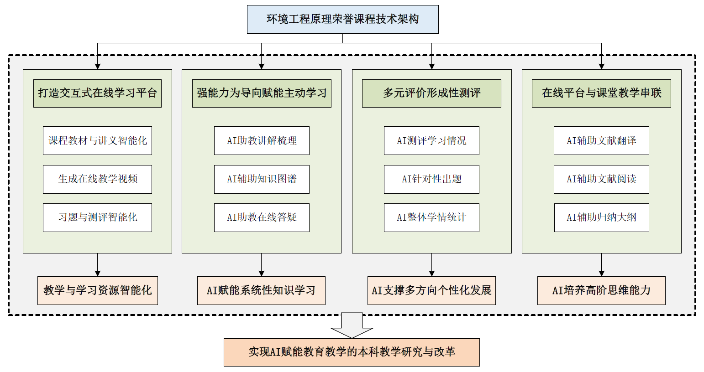

2025秋 · ESE20018h.01 · 刘燕、陈雅欣、蔡润龙、朱秀萍
来源：复旦教务系统教学大纲，本轮使用已授权账号下载。原始正文与考核信息；去除联系方式和网页脚本，内嵌图片按原字节去重保存。
环境工程原理（H）课程涵盖：1）流体流动与输送设备：涉及流体力学基本原理、工程参数计算及输送设备选型；2）热量传递：包括传热机理分析、换热设备设计与强化传热途径；3）吸收过程：研究气液传质理论、吸收塔设计参数及工艺优化；4）反应动力学与反应器：解析生化反应机理，建立反应器数学模型及运行模式选择。荣誉课程着重培养工程技术常用的基本观点和方法，如合理简化的观点、最优化观点、量纲分析法、衡算的方法、数学模型的方法等。
This course covers the following major aspects: 1) Fluid Flow and Transport Equipment: Fundamental principles of fluid mechanics, engineering parameter calculations, and equipment selection; 2) Heat Transfer: heat transfer mechanism analysis, heat exchanger design, and approaches to enhance heat transfer efficiency; 3) Absorption Processes: gas-liquid mass transfer theory, absorber design parameters, and process optimization; 4) Reaction Kinetics and Reactors: biochemical reaction mechanisms, reactor mathematical models, and operational mode selection. This honor course focuses on cultivating the ability to apply the basic concepts and methods in engineering technology, such as reasonable simplification, optimization, dimensional analysis, balance method, and mathematical modeling.
价值引领：培养辩证唯物主义观、工匠精神与绿色发展理念，树立科技报国使命，强化创新严谨的科学态度与工程思维解决实际问题的能力。
知识体系：系统掌握四大核心模块：1）流体流动与输送（流体力学原理、管泵参数计算及设备选型）；2）热量传递（传热机理、换热器设计与优化）；3）吸收过程（气液传质理论、吸收塔参数计算）；4）反应动力学与反应器（生化反应模型、反应器运行模式选择）。重点涵盖概念界定、公式推导及工程参数（管径、塔高、流量等）的定量分析。
能力培养：运用工程思维（量纲分析、数学模型、最优化方法）解决复杂环境问题，强化逻辑推演与理论应用能力。掌握科研成果产业化路径，提升报告、讲演、文献综述、讨论、视频制作、问题设计等实践技能，构建从原理到工程实践的系统性技术转化能力。在本研融通的指导思想下，培养主动学习和科创能力。
本门课程环境工程原理（H）（ENVI130091h.01）每周6学时，共18周、108学时。其中，每周4学时，共72学时是和环境工程原理（ENVI130091.01）普通班基础课一起在同一个教室上，授课方式以讲授为主；每周2学时，共36学时是荣誉班加深拓展课，单独进行线下教学，授课方式以研讨为主。
1）教学以主讲教师课堂讲授为主。
2）课堂面对面师生讨论、同学之间的讨论。
3）借助微信群，或者微信课堂派、超星学习通等进行讨论、投票、作业等等教学活动。
4）需要做书后面的每一道习题。
5）在第16周的最后一次课，需要提交一套考卷和答案（电子版或者单独的本子）。试卷卷面满分是100分。其中20分为选择题，80分为计算题。选择题每一个空2分，10个空的内容最好比较均匀地分布在所学的内容里。80分计算题为2道计算题，分属于第2、3、4、5章中的任意两章即可。考题和答案，必须独立自己出，不能抄袭该课程的教科书或者其它相关书籍上的题目、例题、考题等等；也不能够抄袭网上获得的题目、例题、考题等。计算题的答案，必须每一个步骤给出分数。
6）工程实例参观、报告。
（1）老师讲解前几年某一个同学做得好的水质净化厂的PPT，让学生有初步的概念。学生需要了解城市污水处理的常规处理流程和相关原理，以及和本课程有关的管道、管件、泵、风机、明渠、反应池、气体吸收等的实物和设备。
（2）学生自愿组队，4人一个队，确定4人名单和组长名单后，报给老师。然后进行如下活动，以队的名义提交视频、PPT文件、打分等：
7）习题课由助教主持，邀请习题做得好的同学上讲台讲解，助教补充。
本课程的荣誉班部分主要课下的调研、参观和课上的小组展示和学生间讨论为主。具体教学活动包括以下几个方面：
工艺流程调研
对环境工程中的代表性流程工艺（如生活污水处理的A2O工艺、燃煤电厂的尾气处理工艺等），依托某一具体工程实例（如某污水处理厂），调研污染物处理处置的全流程，重点关注核心工艺的原理和必选原因，厘清工艺的关键指标（如出水或尾气中关键污染物的浓度），了解相关国家标准或行业规范的指标要求。对调研内容进行总结，以PPT结合短视频（1-2分钟）的形式进行汇报。
在课堂展示中，每个小组由一个同学代表，介绍该工艺处理的对象和其处理处置的必要性，重点介绍处理处置的全流程和核心工艺，介绍关键指标与规范要求，以短视频、概念图等方式阐述核心工艺原理。其它小组的同学对工艺进行提问、对汇报进行建设性评价，教师负责引导讨论和评价，并补充相关工艺的知识性信息。同学根据测评量规对展示小组的表现进行测评。展示汇报的小组根据讨论结果对展示材料进行修改，课后再次提交。
本部分内容旨在培养学生的调研能力和对调研材料关键信息的提取能力，不把对环境工程中典型工艺的介绍和掌握作为学习目标，故教学以讨论式教学和启发式教学为主。
工博会与水厂参观汇报
参加在上海举行的和专业有关的国际水平的会展（如中国国际工业博览会，2025年9月23日-27日，地点位于上海国家会展中心），自行看展会的设备、模型、说明书等，和参展的公司人员，特别是技术、专家人员交谈，了解行业需求和行业发展现状和未来趋势。这些国际水平的会展通常会请行业内国内外权威专家来做专业报告，学生需要听专家的专业报告，并在课下结合资料调研进行总结，形成汇报用的幻灯片。
荣誉班会组织每一个同学实地参观上海东区水质净化厂，根据参观的东区水质净化厂收集到的资料，制作一个视频文件，介绍东区水质净化厂的处理流程和本课程涉及的管道、管件、泵、风机、明渠、反应池、气体吸收等的实物和设备等。
在荣誉班的课堂展示中，每个小组会1）对工博会参观过程和心得做PPT汇报2）对照水质净化厂的PPT或视频介绍流程上每一个单元的功能和原理。学生间进行讨论交流和相互测评。
AI赋能的习题设计
根据普通班的学习进程，在每一个章节学习完成后，以个人或小组为单位设计一套和本章主要知识点相关的试题并给出标准答案。习题类型主要为选择题、填空题、排序题。习题由学生使用AI赋能的超星学习平台自动出具，根据学生的理解筛选并给出答案，在荣誉班课堂上对题目的知识点、原理、和选择的原因进行概念辨析。
在课堂展示中，每个小组由一个同学代表，对准备的习题进行讲解，其它小组的同学对习题的设计、答案的准确性进行提问和评价（每一个小组都有指定的小组提问小组，也鼓励其它小组自由提问），教师负责引导讨论和评价。同学根据测评量规对展示小组的表现进行测评。展示汇报的小组根据讨论结果对习题进行修改，课后再次提交，学期末集中展示所有章节的试题。
AI辅助的文献综述
学生针对某一个与环境工程有关的专题对进行文献综述。教师利用荣誉课堂的教学对科研论文进行介绍，进而讲解文献综述的目的、内容、写作方法和一般格式。学生以小组为单位，通过AI问答和小组讨论确定选题和章节内容，使用AI辅助文献翻译，准备文献综述的文档和展示用的PPT文件，但不允许使用AI进行文本撰写。
在课堂展示中，每个小组由一个同学代表，介绍文献综述结果，阐述选题的原因和该方面研究的意义，汇报综述的内容和已有研究的关键性结论，同时也当堂展示文献综述的文档。其它小组的同学对综述和汇报内容进行提问，教师负责引导讨论和评价。

第一章 绪论 (3.5 学时)
1.1 概述 （第一周）
1.2 质量衡算与热力学第一定律 （第一周）
1.3 平衡与速率 （第一周）
1.4 物理量的单位和单位制 （第一周）
第二章 流体流动 (22.5学时，包括21学时的授课和1.5学时的习题课)
2.1 概述 （第一周）
2.1.1 流体流动的考察方法（第一周）
2.1.2 流体流动的基本概念 （第一周）
2.1.3 流体流动的内摩擦力 （第二周）
2.1.4 流体流动的类型及其判断 （第二周）
2.1.5 流动边界层 （第二周）
2.2 流体流动时的阻力损失（第二、三周）
2.2.1 影响阻力损失的因素 （第二周）
2.2.2 沿程阻力损失 （第三周）
2.2.3 局部阻力损失 （第三周）
2.3 管流系统的衡算方程及应用 （第三、四周）
2.3.1 质量衡算方程 （第三周）
2.3.2 能量衡算方程 （第四周）
2.3.3 管路计算 （第四周）
上海某实际污染物净化厂参观实习前相关知识点介绍（2学时，第四周）
上海某实际污染物净化厂参观实习（4学时，第五周）
上海某实际污染物净化厂参观实习后PPT的介绍（2学时，第六周）
2.4 明渠均匀流和薄壁堰 （第六周）
2.4.1 明渠均匀流形成条件和特点 （第六周）
2.4.2 明渠均匀流计算（第六周）
2.4.3 薄壁堰 （第六周）
2.5 常见测量仪器（第六周）
2.5.1 文丘里流量计 （第六周）
2.5.2乌氏粘度计 （第六周）
2.6 两相流动 （第七周）
2.6.1 球形颗粒在流体中运动阻力与阻力系数 （第七周）
2.6.2 重力沉降 （第七周）
2.7 流体输送设备 （第七、八周）
2.7.1 离心泵 （第七、八周）
2.7.2 离心压缩机（第八周）
2.7.3 往复压缩机和往复泵（第八周）
2.7.4 其它常用流体输送设备 （第八周）
第三章 热量传递 (11学时，包括10学时的授课和1学时的习题课)
3.1 概述 （第九周）
3.1.1 热量传递的基本方式 （第九周）
3.1.2 环境工程领域中的传热问题 （第九周）
3.2 热传导 （第九周）
3.2.1 傅立叶定律 （第九周）
3.2.2 导热系数 （第九周）
3.2.3 平壁稳定热传导 （第九周）
3.2.4 圆筒壁热传导 （第九周）
3.3 对流传热（第十周）
3.3.1 对流传热机理 （第十周）
3.3.2 对流传热速率 （第十周）
3.3.3 对流传热系数的经验式（第十周）
3.3.4 保温层的临界直径 （第十周）
第一章和第二章的习题课（2学时，第十周）
3.4 传热过程的计算 （第十一周）
3.4.1 热量衡算 （第十一周）
3.4.2 总传热速率方程 （第十一周）
3.4.3 总传热系数 （第十一周）
3.4.4 传热的平均温差（第十一周）
3.4.5 传热计算举例 （第十一周）
3.5 热交换设备 （第十一周）
3.5.1直接接触式换热器（第十一周）
3.5.2蓄热式换热器 （第十一周）
3.5.3间壁式换热器 （第十一周）
3.6 强化换热器传热过程的途径（第十一周）
第四章 吸收(14学时，包括12学时的授课和2学时的习题课)
4.1 概述 （第十二周）
4.1.1 环境工程中的传质过程 （第十二周）
4.2 传质机理和传质速率 （第十二周）
4.2.1 分子扩散 （第十二周）
4.2.2 对流扩散 （第十二周）
4.3 气液的相平衡 （第十二、三周）
4.3.1 概述 （第十二周）
4.3.3亨利定律 （第十二周）
4.3.4 相平衡和吸收过程的关系（第十三周）
4.4 吸收的动力学基础（第十三周）
4.4.1 概述 （第十三周）
4.4.2 双膜理论 （第十三周）
4.4.3 吸收传质速率方程 （第十三周）
第三章习题课（1学时，第十三周）
4.5 吸收过程的设计与操作计算 （第十四周）
4.5.1 概述 （第十四周）
4.5.2 吸收塔的物料衡算及操作线方程 （第十四周）
4.5.3 吸收剂用量的计算 （第十四周）
4.5.4 吸收塔填料层高度的计算 （第十四周）
4.5.5 理论级数与塔高的计算 （第十四周）
4.5.6 塔径的确定 （第十四周）
4.5.7 吸收过程的操作型计算 （第十四周）
4.6 解吸 （第十四、五周）
4.6.1概述 （第十四周）
4.6.2 气提解吸 （第十五周）
4.7 多组分吸收与化学吸收 （第十五周）
4.7.1 多组分吸收 （第十五周）
4.7.2 化学吸收 （第十五周）
第五章 反应动力学及反应器(5学时) （十五、六周）
5.1 反应动力学 （第十五周）
5.1.1 反应的分类 （第十五周）
5.1.2 反应速率及方程 （第十五周）
5.1.3 均相反应动力学 （第十五周）
5.1.4 生化反应动力学 （第十五周）
5.2 反应器 （十六周）
5.2.1反应器内物料的流动模型 （十六周）
5.2.2 反应器及运行方式 （十六周）
5.2.3 理想均相反应器的计算 （十六周）
5.2.4理想均相反应器的优化选择 （十六周）
5.3 微生物反应器 （十六周）
5.3.1 间歇式微生物反应器 （十六周）
5.3.2.连续式微生物反应器 （十六周）
第四章习题课（2学时，十六周）
复习、考试（8学时，第十七、八周）
主要为课堂讨论，讨论的内容包括实地参观、听讲座、网上查阅资料和AI辅助阅读、AI辅助的文献综述、AI出题和当堂讲解、PPT文件、视频制作以及撰写、讲解、讨论、修改、提交设计计算书。学生提供自己完成的题目及解答、PPT文件、视频、文献综述、设计计算书，然后上课进行讨论。由学生讲解，其他同学提问，师生讨论等等共同完成。
1）实践活动，案例分析，演示、展示，研讨，网上、网下查阅资料、整理资料等等（共16学时）
（1）参观国际环保展会或者工业博览会等（包括展览的机械、设备、模型、专家讲座）（4个学时）。（具体时间需要根据展会的举办情况而定）。
（2）参观国际环保展会或者工业博览会等后PPT和视频的演示、展示，研讨，案例分析（2学时）。
（3）实地参观水质净化厂（4学时）。
（4）水质净化厂参观实习后视频演示、展示，研讨（2学时）。
（5）某一个与环境工程有关专题的网上、网下查阅资料、整理资料，写国内外文献综述word文件和相应的PPT文件在课堂上进行演示、展示，研讨（4学时）。
2）根据普通班基础课每周的学习进程，需要每一个学生结合超星平台AI智能体，逐渐完善出一套和这一章有关的习题及标准答案，然后在课堂上讲解、讨论（同学之间、师生之间等等），修改后再提交。以及在第16周的最后一次课，需要提交一套习题和答案。这个过程也涉及习题操练，网上、网下查阅资料、整理资料，演示、展示，研讨等等（共16学时）
第一章 绪论 (2 学时)
第二章 流体流动 (4学时)
第三章 热量传递 (4学时)
第四章 吸收(4学时)
第五章 反应动力学及反应器 (2学时)
3）复习、考试（4学时）
以上荣誉班加深拓展课课程周次安排如下表，括号表示学习活动中的教学主体：
|
周次 |
第一节内容 |
第二节课内容 |
|
1 |
学生和教师自我介绍，课程安排与反馈 |
荣誉课程内容和要求介绍（教师） |
|
2 |
环境工程原理的工程应用介绍（教师） |
环境工程原理的科研应用介绍（教师） |
|
3 |
第一章习题（学生） |
工博会介绍 |
|
4 |
法定假日 |
|
|
5 |
工博会参观 |
|
|
6 |
第一章习题（学生）；文献综述介绍（教师） |
|
|
7 |
工博会参观汇报（学生）；PPT汇报和文献综述介绍（教师） |
|
|
8 |
第一章、第二章习题研讨 |
|
|
9 |
文献综述选题讨论；水厂参观介绍和往届资料研讨 |
|
|
10 |
水厂参观 |
|
|
11 |
水厂参观 |
|
|
12 |
水厂参观汇报 |
|
|
13 |
第三章习题研讨 |
|
|
14 |
文献综述成果汇报 |
|
|
15 |
第四章习题研讨 |
|
|
16 |
第五章习题研讨；所有习题回顾总结 |
|
|
17 |
复习（学生） |
|
|
18 |
考试（学生） |
|
| 项目 | 比例 | 评定说明 |
|---|---|---|
| 期末考试Final Examination：闭卷 | 25.0% | 依照答题正确情况 |
| 课题论文Research Paper | 15.0% | 依照设计计算结果和阐释是否合理 |
| 线上学习Online Learning | 6.0% | 完成课堂借助微信群，或者微信课堂派、超星学习通等进行的讨论、投票、作业等等教学活动（无论对错），并且能够说明或者解释其答案或者选择等（无论对错） |
| 课堂表现Participation | 11.0% | 1)能够回答老师的提问（无论对错）2)在规定时间内完成课堂借助微信群，或者微信课堂派、超星学习通等进行的讨论、投票、作业等等教学活动（无论对错），并且能够说明或者解释其答案或者选择等（无论对错） 3）积极提问，表达观点（无论对错）4）对其他同学的报告认真听，积极参加讨论，提出相关问题，探索正确答案 |
| 作业/实验/实践Assignment | 10.0% | 按时交作业；概念解释清晰，分析问题条理清楚，计算过程层次清晰。根据结果正确率评定成绩 |
| 汇报Presentation | 33.0% | 按时参加参观上海东区水质净化厂、工业博览会、工程实例，并且认真听讲、仔细参观、不懂就问、拍摄相关照片和视频，遵守纪律，听从指挥。提交参观后的PPT文件、文献综述、习题讲解等材料信息完整、正确、美观、复合科研规范。在规定时间内能够完整、熟练、流畅、清晰、生动地讲述自己的PPT文件、视频、自设题目及答案、自己出的考题和答案。能够正确回答其他同学的提问和老师的提问，证明自己是正确的，或者找出问题所在，并一起讨论、解决问题。 |